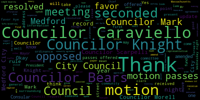

AI-generated transcript of City Council 01-07-20
English | español | português | 中国人 | kreyol ayisyen | tiếng việt | ខ្មែរ | русский | عربي | 한국인
Back to all transcripts
[Hurtubise]: The first regular meeting of the Medford City Council in 2020 will now come to order. Madam Clerk, please call the roll.
[y31vTPCB2oY_SPEAKER_03]: Councilor Bears. Here. Councilor Caraviello. Present. Councilor Falco. Present. Councilor Knight. Present. Councilor Marks. Present. Councilor Morell.
[Scarpelli]: Present.
[y31vTPCB2oY_SPEAKER_03]: Councilor Scarpelli.
[Scarpelli]: Present.
[y31vTPCB2oY_SPEAKER_03]: Please rise for the Pledge of Allegiance.
[Hurtubise]: Thank you. We have three immediate goals for this evening. Goal number one is to elect a council president for the year. Goal number two is to elect a council vice president for the year. Goal number three is to get the gavel out of my hands as quickly as possible. So let's proceed. All right, item number one on the agenda. 20-001, election of a council president for 2020. May I please have nominations for council president. Councilor Knight has nominated Councilor Falco. Councilor Bears has seconded. Are there any further nominations for council president? Councilor Knight and Councilor Bears have moved to close nominations. For the Office of President of the Medford City Council for 2020, Madam Assistant Clerk, please call the roll.
[y31vTPCB2oY_SPEAKER_03]: Councilor Bears. Yes. Councilor Caraviello.
[Caraviello]: John Falco.
[y31vTPCB2oY_SPEAKER_03]: Councilor Falco.
[Falco]: Present.
[y31vTPCB2oY_SPEAKER_03]: Councilor Knight. By a vote of six in favor and one abstaining, Councilor Falco is Council President for 2020.
[Hurtubise]: Mr. President, please step forward so I can administer the oath. Please raise your right hand and proceed after me. I, John C. Falco, Jr., do solemnly affirm.
[Falco]: I do John C. Falco Jr. solemnly affirm that I will faithfully and impartially discharge and perform all the duties incumbent upon me as Medford City Council President.
[Hurtubise]: According to the best of my ability. According to the best of my ability. And understanding. And understanding. Agreeable to the rules and regulations of the Constitution.
[Falco]: Agreeable to the rules and regulations of the Constitution.
[Hurtubise]: The laws of this Commonwealth. The laws of this Commonwealth. And the ordinances of the City of Medford.
[Falco]: And the ordinances of the City of Medford.
[Hurtubise]: Congratulations Mr. President.
[Falco]: Thank you very much. Thank you. Thank you very much. I really appreciate that. Thank you. I want to thank my colleagues for their support. Once again, I appreciate the support. I look forward to working with everyone in the coming year. I look forward to working with the administration and doing everything we can together to move Method forward. So thank you very much. I appreciate it. Thank you.
[Hurtubise]: Moving right along. Item 20-002, election of a council vice president for 2020. Councilor Scarpelli. Councilor Knight seconds. Are there any further nominations? Is there a motion to close nominations? Councilor Marks moved to close. Councilor Scarpelli second.
[y31vTPCB2oY_SPEAKER_03]: For the role of council vice president for 2020 madam assistant clerk, please call the roll council beers Councilor Caraviello president councilor Falco resident Falco Council at night Councilor Marks councillor Morell Councilor Scarpelli
[Hurtubise]: Six votes in favor and one abstention. Richard Caraviello is Council Vice President for 2020. Congratulations.
[SPEAKER_04]: I, Richard F. Caraviello, do solemnly affirm that I will faithfully and impartially discharge and perform all the duties incumbent upon me as Medford City Council Vice President
[SPEAKER_07]: according to the best of my ability and understanding, agreeable to the rules and regulations of the Constitution, the laws of this Commonwealth, and the ordinances of the city of Medford. Mr. Vice President, congratulations.
[Caraviello]: I want to thank all my colleagues for their support in electing me the Vice President. And I look forward to a good year working with everybody here and the new administration so we can make Method the best we can possibly be. Thank you.
[Hurtubise]: Mr. President, your gavel. Thank you, Madam Assistant Clerk. It's the appointment of the City Messenger. I'm sorry. I hope it's not the clerk. Me too.
[Falco]: Motions, orders, and resolutions. 2-0-0-0-3. Appointment of the City Messenger. Councilor Caraviello.
[Caraviello]: I nominate Lawrence Lepore. Second.
[Falco]: Councilor Caraviello nominates Lawrence Lepore, seconded by Councilor Knight. All those in favor? Aye. All those opposed? The motion passes. Congratulations. You can take a voicemail.
[Hurtubise]: You can take a local. Swearman up here.
[SPEAKER_03]: Yes. Congratulations, my friend.
[Scarpelli]: You're gonna repeat after me.
[Hurtubise]: I, Lawrence Lepore do solemnly affirm.
[SPEAKER_03]: I, Lawrence Lepore do solemnly swear. That I will faithfully and impartially. That I will faithfully and impartially. Discharge and perform. Discharge and perform. All the duties. All the duties. Incumbent upon me. Incumbent upon me. As Medford City Messenger. As Medford City Messenger. According to the best of my ability. According to the best of my ability. And understanding. And understanding. Agreeable to the rules and regulations of the Constitution. Agreeable to the rules and regulations of the Constitution. the laws of this commonwealth. The laws of this commonwealth. And the ordinances of the city of Medford. And the ordinances of the city of Medford. Congratulations. Thank you, thank you. Thank you all. I have something for your son.
[Unidentified]: Thank you.
[Hurtubise]: Congratulations.
[Falco]: 20-004, offered by Councilor Caraviello. Be it resolved that the standing committee rules be adopted as the standing rules of the city council insofar as they are applicable. Councilor Caraviello. Thank you.
[Caraviello]: Thank you, Mr. President. A little housekeeping here that we do at the beginning of the year, but a motion that we adopt all the standing rules of the city council going forward.
[Falco]: Thank you, Councilor Caraviello. On that motion, seconded by Councilor Scarpelli. All those in favor? All those opposed? The motion passes. 2-0-005, offered by Councilor Caraviello. Be it resolved that the City Council transfer all papers in committees or on the table from the 2019 Council to the 2020 Council. On the motion of Councilor Caraviello, on the motion of Councilor Knight, seconded by Councilor Scarpelli. All those in favor? Aye. All those opposed? The motion passes. 2-0-006 offered by Council tonight be it resolved that the Medford City Council request the City solicited to provide the framework of a draft ordinance enabling the establishment of a City Beautification and Improvements Advisory Commission for Council debate and discussion. Councilor Knight.
[Knight]: Mr. President, thank you very much. This is a measure that I've been thinking about for quite some time. Just recently, we saw the change of the name of Dudley Square in Boston, and that was something that was kicked off by the City's Improvement Committee. And after looking into the City's Improvement Committee and the duties and functions that they have, and looking at the City of Medford and the roles and responsibilities that our various departments have, I thought that it might be a good idea for us to start a discussion about creating a City Beautification and Improvement Advisory Commission that can provide us with ideas and revenue requests to figure out ways that we can better our curb appeal for those that are coming to the community and better deliver city services here in the community. So with that being said, Mr. President, I ask my council colleagues to support the measure to send this to the city solicitor for a draft framework for future debate.
[Falco]: Thank you, Councilor Knight. Councilor Caraviello.
[Caraviello]: Thank you, Mr. President. I thank Councilor Knight for bringing this forward. In my last few years on the council, one of my peers in the city was the curb appeal of how we look to other people. And I hope this will be something that will take up all the, as we would say, the low-hanging fruit that is visible to people in the city. And hopefully we can have a more beautiful city.
[Falco]: Thank you, Councilor Caraviello. On the motion of Councilor Knight, seconded by Councilor Caraviello. All those in favor? All those opposed? The motion passes. 2-0-007 offered by Councilor Knight. Be it resolved that the Medford City Council request that representatives from the Evisource Pipeline Project appear before the City Council. on a no less than quarterly basis to provide updates and address community concerns surrounding the project and be it further resolved that the council requests the first of these meetings occur no later than the first week of February. Councilor Knight.
[Knight]: Mr. President, thank you very much. This is something that's rather self-explanatory. Councilor Marksley should actually be included as a co-sponsor on this. This is a measure that we discussed in previous session. It's something that's very important to this community, and it's something that I think we should keep on the forefront going forward. We have about a 3.5-mile-long gas pipeline that's going to be stretching down Mystic Gap, down South Street, underneath the Mystic River, through our community garden, up Winthrop Street, down past Medford High School, all the way to the Winchester border, and then continue on into Woburn. It's going to be a very large construction project. It's going to cause a number of disruptions to traffic, to traffic flow, to quality of life for residents in the neighborhood. And I think it's very important, Mr. President, that we keep people informed. We did something very similar with the Lawrence Memorial Hospital. There was a lot of concern about the future of the Lawrence Memorial Hospital, and through the good work of friends from the Lawrence Memorial Hospital that are here this evening, actually, to witness our first meeting with our two new Councilors, we were able to garner some community support for the project, address the number of concerns that came up. and come up with a project that actually worked for everybody. So with that being said, I'm hoping that we can do the same for this Eversource Pipeline project and create an open and transparent line of communication between us and the project managers and project development teams so that we can address some of these quality of life issues that are gonna be inevitable with a project of this size.
[Falco]: Thank you, Councilor Knight. If for the first time I'd like to recognize one of our newest councilors, Councilor Bears.
[Bears]: Thank you, Mr. President. I just want to commend my colleagues for bringing this forward. It's essential for public safety, seeing what happened in North Andover, Andover, and Lawrence, that they get this right. And even more importantly, I'd like to see climate crisis mitigation, make sure that this pipeline isn't leaking gas. It's the last thing Medford needs to be doing is adding more natural gas to the atmosphere. Thanks.
[Falco]: Thank you, Councilor Bears. On the motion of Councilor Knight, seconded by Councilor Bears. All those in favor? Aye. All those opposed? The motion passes. 2 0 dash 0 0 8 offered by consulate night be resolved that the medford city council requests that the city traffic engineer take the necessary steps to address the signal timing issues on harvard street between main street and mystic avenue that are causing traffic flow in congestion problems console night mr. President thank you very much maybe in
[Knight]: A little before August, at the end of Harvard Street at Mystic Avenue, the left-hand lane was turned into a left-turn only lane. And since that time, there's been some changes to the signalization of the lights further down Route 16, but those changes haven't made their way all the way up Harvard Street. So what happens, Mr. President, is if you were coming from, oh, say, St. Clemens Church after your kids' basketball game last Saturday morning at 10 o'clock, and you drove down Harvard Street, and you passed the intersection of Main Street, and then you'd get right past Main Street and be stuck in traffic. And then the light on, Me and Harvard and Willis would change green, but the light on Mystic Ave wouldn't. So the traffic wouldn't go anywhere. The light would turn red, then the light would turn green between Willis and Harvard, I mean Willis and Mystic, and the cars would proceed. So I think it's really just an engineering issue, a signal timing issue that needs to be addressed. Ultimately, I'd like to see that left-hand lane go back to the way that it was originally, where it was a straight or left. But it's my understanding that the state DOT put those restrictions in as a result of some of the construction traffic mitigation that was surrounding the casino project. But based upon the numbers that we've seen at the casino and the underperformance that we've seen at these casinos based upon their estimates versus their actual returns, I think that it might be something that we can look at in changing that back, Mr. President. I don't think any of us have really felt the big impact of traffic since the casinos opened here in the city of Medford. And I think that some of these issues that are, you know, affecting our neighborhood's traffic flow and congestion can really be addressed through an engineering study in the timing of lights. I know we spoke about South Street and Main Street and the smart lights that we might be able to put there and the large cost that comes along with those to create a situation where we have smart lights that go through our squares. I think the price tag was somewhere around $5 million. But I think that engineering study or at least the very least the city engineer taking a look at this doing a traffic count and coming up with a Long-term solution for the residents in the neighborhood would be beneficial.
[Falco]: So I asked my council colleagues to support the resolution Thank You councillor night on the motion of council and I second my council Caraviello councillor marks
[Marks]: I want to thank my council colleague for bringing this up. In addition, as he just alluded to, South and Main Street, that intersection has been in discussion with this council for as long as I've been on the council. And I believe we're at a bypass at this particular point because the state is saying that in order to do the signalization, you'll need to start from South Street and work your way all the way back. And it's going to cost them millions of dollars to do this. Just, I believe it was three or four days ago, there was a major, major accident at that very intersection in the city. And that happens almost daily from what I hear from residents. And I would ask again, as you know, we asked our state delegation to meet with DOT and so forth. I know Councilor Scott Pell has been very active in this issue, but to be quite frank, there's been very little movement, and even some of the issues that we spoke about, about adding possibly a raised crosswalk, adding some additional signage, things that don't really take into consideration the signalization that they're talking about, and would provide some increased safety in the area. We're looking at putting a brand new police station across the street, and it's one of the most dangerous areas in the city. I mean, and there's nothing being done to the surrounding infrastructure. We're spending millions of dollars on a new building, a new facility, but I wouldn't tell any residents to walk there because I don't trust crossing either way. And this is a major concern. So I would ask that as part of this recommendation that we also get an update from our state delegation and the Department of Transportation where we stand with the signalization on south of Maine, Mr. President. Thank you, Councilman Marks.
[Scarpelli]: Councilor Scarpelli. I appreciate Councilor Marks bringing that up. I had a lengthy discussion with Representative Donato right after our inauguration and it's been very frustrating. He has been working very hard to try to set up a meeting not only for the Salton Main but also for the residents that are looking for the sound barrier over on So the frustrating piece that he relayed to me was that The conversations will start back up, and we would call for a meeting first thing after the holiday because of scheduling concerns with the people from DOT. So this has been very frustrating. This is something that we talked about as part of our discussion, that I would put forth a resolution next week. I'm glad you did it this week. We could just add it through. I was giving the representative His due diligence, he was meeting with them this week, and then hopefully he's calling for a meeting on next week. So the sooner the better. So I appreciate bringing that forward. And it is something that we keep saying, until someone dies at that intersection is when you're going to see something happen. But if I could just follow that up with a B paper, if I can, and jump ahead and ask our new mayor and our police chief, I think a lot of the low hanging fruit can be accompanied here and followed up here with our traffic department. So raised sidewalk, illuminated stop signs, painting on some of those streets, we can have our department do that right away. I think that we're waiting for the state, obviously they've dragged their feet. I believe that we're also looking for the stop sign further up South Street. I believe at Toro, and that hasn't been done yet either. So if we can just follow that up with a letter to the mayor, administration, and the chief of police, that we look into that, and hopefully they can report back to us with some of those traffic calming measures. Thank you.
[Falco]: Thank you, Councilor Scarpelli. And for the first time, I'd like to recognize one of our other newest councilors, Councilor Morell.
[Morell]: Thank you, Mr. President. To really kind of echo what Councilor Marks was saying, when we look at these signaling issues, making sure we're thinking beyond the cars, there are people on foot, they're on bikes. And as traffic builds up, people tend to make hasty decisions that make it even more tricky for people to get through crosswalks, to get through on bikes. So just ensure that we're looking at really a holistic approach to safety in these intersections.
[Falco]: Thank you.
[Marks]: Councilor Marks. Thank you. Just to follow up, Mr. President, and I've been saying this for years, and I know some people don't like when I say it, but I'm going to continue to say it. We have a number of state roads in this community. And when we reach out as a council or the mayor reaches out, we expect to at least get a response in a timely manner. And that's not happening. South Street's a perfect example. We've been waiting 10 years probably even over 10 years, to get some type of relief there. And it's yet to come. In my opinion, if we as a community deem this as a public safety hazard, which we know we've received reports from the chief of the hundreds of accidents at that particular intersection, we should be able to intervene as a city and say, enough's enough. I don't care if it's a state road, a federal road, or a road from whoever. We're going to take care of it on behalf of our residents and our community. And it's not just that area, Mr. President. It's Elm Street. It's Middlesex Ave. It's sidewalks that the state refuses to come in and fix that's a trip and fall hazard. It's trees that they refuse to trim on their property that happen to be in front of people's homes that pay taxes in this community. So if I live in one of these streets that are a state road, I'm paying taxes to the city. It's very difficult to tell a resident, well, sorry, we as a city can't do anything, even though you're paying taxes to us, we have to wait for the state to step in. I think it's about time that we step in, Mr. President, and start making some of these changes. And let the cods fall where they may be. Let the state get upset about it. Maybe that'll create a new story, Mr. President, like you see happening now in the news, where some cities and towns are unable to fix these giant potholes and so forth, and some of these state roads, and the inaction. And that's a major concern, Mr. President. I'm tired of wasting time, to be quite frank, talking about the same issue year after year after year. And salt in Maine is a major, major concern. And this will be the year that we act, one way or another. We have to do something, Mr. President. We just can't keep on talking about it. Like I said, it was a major accident. And I believe there has been a fatality over there in the last several years as well, a pedestrian fatality. So this is well documented. So I just wanna put that in again, Mr. President. These are our roads and streets. They may be state under state jurisdiction, but they're our roads and our streets, our residents are crossing them, our residents are driving on them, and we have to maintain safety. And if the state's not willing to do anything, then we have to step up as a community. Thank you. Thank you, Councilor Marks.
[Falco]: Councilor Bears.
[Bears]: Thank you, Mr. President. I just want to say two things. One, I think South and Maine, we need to address it. I also think Councilor Knight's original motion, we need to address that. I've been also stuck in that traffic. But I am also a resident of a state road. I live on Fellsway West. I live on a DCR road, not a MassDOT road. And I think something we as a council need to think about and talk to our state delegation about is that DCR is deeply underfunded. They're not getting the money they need. They're patching things together. I don't know if anyone's driven up by spot pawn, but they've been fixing the the road around Spot Pond for like two years, and I'm assuming it's because they don't have enough money to hire construction crews. So that's something I think the council should explore, look at, as well as just speaking with our state delegation about how we can make sure that our state agencies have the funding they need to actually provide the services that we deserve.
[Falco]: Thank you, Councilor Bears. Mr. Castagnetti. One minute, please.
[Castagnetti]: Andrew Castagnetti, Mefford, Massachusetts. Congratulations, politicians, and I wish you great success and good health. Thank you. On the subject of Salton Main Street, when I first received my license a while back, many decades, it's been a problem since then. I'm glad the council is still trying to find a solution to this problem. I believe a few years back, I brought up the Chief Sacco, the crime watch meetings, and also to Chief Buckley, can't we just erect the $100 sign that you probably have at the DPW yard, one on each side, as you're coming off of South onto Main, and have it be right turn only, not go across towards Route 93, not go into the middle of Main Street to take a left into Medford Square, And I believe Chief Buckley says, Andrew, it's going to happen, a few months ago. And for some reason, I guess it did not go forward. So I guess there's no perfect solutions in this world. However, is it possible to put the $100 sign up, times two, and have an officer at that corner during rush hour times, especially? At least for a three-month or six-month trial basis, what we got to lose, we probably have a lot to save. Just an idea that I'm rehashing. Thank you for listening.
[Falco]: Thank you, Mr. Cascanetti. Okay, we'll take the B paper first offered by Councilor Scarpelli to receive updates from the traffic engineer with regard to the safety improvements that were recommended previously.
[Scarpelli]: Okay.
[Falco]: On that motion, seconded by Councilor Caraviello. All those in favor? Opposed? The motion passes. On the main resolution offered by Councilor Knight, seconded by Councilor Caraviello, as amended by Councilor Marks. Did you have an amendment, or I know Councilor Scarpelli, I think, Councilor Scarpelli gave an update, so I wasn't sure if, do you want me to leave that as amended, or? Okay, so on the motion of Councilor Knight, seconded by Councilor Caraviello, as amended by Councilor Marks. All those in favor? All those opposed? The motion passes. On the motion of Councilor Caraviello, seconded by Councilor Morell, to suspend the rules to take a paper out of order. All those in favor? All those opposed? The motion passes. Communications from the Mayor. 20-013, December 31st, 2019, to the Honorable President and members of the Medford City Council, City Hall, Medford, Massachusetts, 02155. Dear Mr. President and city councilors, I respectfully request and recommend that your honorable body approve the following home rule petition to be sent to the general court regarding certain funds and expenditures by the city of Medford received through its surrounding community agreement. homeowner petition, an act of authorizing the city of Medford to utilize funds received from the surrounding community agreement entered into between the city of Medford and Windmass LLC for the purposes set forth in the agreement. Be it hereby resolved that the Legislature of the Commonwealth of Massachusetts enact this Home Rule petition to allow the City of Medford to utilize funds received from the Surrounded Community Agreement executed on April 11, 2014 between the City of Medford and Windmass, LLC. or its surrounding, I'm sorry, or its successors or assigns for the purposes that are set forth in said agreement or as amended. To accomplish these purposes, the city of Medford is authorized without the necessity of any further approval to create a special revenue fund. The legislature may reasonably vary the form and substance of the requested legislation within the scope of the general objectives of this petition. be it enacted by the Senate and House of Representatives in general court assembled and by the authority of the same as follows. Section 1, notwithstanding any provision of the Massachusetts general laws or the provisions of any general law, special law, or regulation to the contrary, The City of Medford, through the Mayor of the City of Medford, may, without further appropriation, utilize and expend all funds received by way of the surrounding community agreement executed on April 11, 2014, between the City of Medford and Windmass, LLC, or its successes or signs, for the purposes that are set forth in the said agreement or as amended. Section two. This act shall take effect upon its passage and shall be effective during the present fiscal year. Respectfully submitted, Mayor Stephanie M. Burke. We have a representative from the administration here tonight.
[Nunley-Benjamin]: If you could please have your name and address for the record. Aleesha Nunley Benjamin, Finance Director for the City of Medford. Good evening, Honorable City Councilors. This home rule petition will actually create a special revenue fund for the agreement. So the agreement actually specifies how the money is supposed to be by purpose. The Department of Revenue never created a fund for it. It just left it as general fund revenue. And as you know, any unused general fund revenue falls into free cash undesignated fund balance, which would be against the way the agreement is written. Those funds should be rolled over for those purposes. And that's why we're asking for a whole new petition. Thank you.
[Falco]: Councilor Bears.
[Bears]: Hi, Director. Thank you for being here. Just a quick question. It says, without further appropriation, is that further appropriation by the general court or by this council?
[Nunley-Benjamin]: By this city council.
[Bears]: Thank you.
[Falco]: Thank you, Councilor Bears.
[Knight]: Councilor Knight. Mr. Pitt, thank you very much. So with the adoption of this homework petition, what we're saying is that This agreement that we've negotiated on April 11, 2014, the funds would not have to come before the council for appropriation when they're being spent?
[Nunley-Benjamin]: Correct.
[Knight]: And it also says that any other successor agreement after this April 2014 agreement that negotiated between Wynne and the administration?
[Nunley-Benjamin]: If there's any successors, correct.
[Knight]: Thank you very much.
[Falco]: Thank you, Council Knight.
[Knight]: Well, actually, one more question. Is there a reason why we want to do it that way as opposed to the agreement at a time, why we want to give up blanket authority from now until the end of time?
[Nunley-Benjamin]: The way the state had set it up was each community that was impacted through the law had to have these agreements set up. And they're just trying to make it so if they have to renegotiate with whoever, they don't have to go back to counsel again. Let's say Wynn sold it to a different casino owner. Why come back just because it's a different casino owner? I think that's the meaning behind it.
[Knight]: Or if a second successor agreement is entered into in the future to address community mitigation impacts, the benefits that are negotiated in that agreement would not be subject to appropriation by the council?
[Nunley-Benjamin]: Right. It would be with the mayor. That's how it was set up from before.
[Knight]: Okay. Thank you.
[Nunley-Benjamin]: Thank you. Council night.
[Falco]: Councilor Marks.
[Marks]: So, Mr. President, when this agreement was signed in 2014, it's my understanding that money was earmarked by the mayor at the time for different needs in the community, one being public safety, one being road improvements, and I believe there was something in there for arts and so forth, but it spelled out the particular needs in the community and what this money would go towards. And I'm not sure if every member of the council is aware of this particular document, but I think it would be helpful to provide the council with the document itself and to make sure that the money, when it's being appropriated, especially if it's not gonna require a council approval, that we know what it's being earmarked to. I can tell you firsthand that road improvements and public safety should be a top priority regarding this particular money. And I would just ask, is that still the case that the money was earmarked to particular needs in the community?
[Nunley-Benjamin]: Correct, yes.
[Marks]: Do you have that in front of you?
[Nunley-Benjamin]: Yes, and it's also a public document that's online, you could Google it.
[Marks]: And I agree, but it may be easier just maybe if we can.
[Nunley-Benjamin]: Could I give a copy to Larry, at least for, I brought with, in case anybody wanted to see some of the earmarks. Well, if you can read off,
[Marks]: Do you have another copy to read off? Yeah, if you could just read off the needs, because there's some new members of the council, and I've been receiving a number of questions from different organizations in the community that said, geez, we thought that some of that money is supposed to be earmarked to arts or other needs in the community. And I want to be able to get back to these groups.
[Nunley-Benjamin]: Yep, there's $125,000 community fund payment. Thank you. And there's $325,000 transportation hub payment, $100,000 business athletics. want $250,000 public safety, $100,000 for cultural fund, $100,000 for water transportation.
[Marks]: And we haven't received any of this money as of yet, because it was based on the opening, correct?
[Nunley-Benjamin]: It opened in the summer. So yes, we have received the money.
[Marks]: OK. And have we expended any money?
[Nunley-Benjamin]: They just made awards for the community fund. We haven't expended anything, but the awards have been made. So the payments haven't been made yet, but they're going to be.
[Marks]: Okay. How will we know about a complete accounting for this every fiscal year?
[Nunley-Benjamin]: That's why I want to have a special revenue fund that tracks it by category. So I would have a revolving fund set up by category with a budget for each amount that I expect to come in per year for me to track it. So will this now be included in the budget process? It would be in a, with this home rule petition, it would be in a special revenue fund so that I could track it.
[Marks]: Revenue fund, but will that also be part of the budgeting process? Not a part of the budgeting process. Can we make it part of the budgeting process? So at least every year we're Looking at it?
[Nunley-Benjamin]: Well, because it's earmarked by a specific purpose, so we have to follow the purpose.
[Marks]: Right. I just want to make sure that that's being followed, especially where this is new.
[Nunley-Benjamin]: It would be followed. It has to be followed by agreement.
[Marks]: Okay. I put on the agenda, it has to be over a year ago, money that was earmarked to the city that was supposed to go to the neighborhoods. from Tufts University, they bought some air rights over the train tracks. And at the time, the state didn't want to negotiate. They said, you can negotiate on our behalf regarding what you'd like to do with the money. And I've yet to get an accounting regarding, I think it was $425,000 or $500,000 on where that money has been spent. And I know you provided something, but it didn't say what it was spent on, where it was spent. It didn't say if it was spent in the neighborhoods. It didn't answer any of the questions.
[Nunley-Benjamin]: Well, for that amount, I wasn't there at that time, but for the Neighborhood Cultural Fund that you're talking about for those funds, the way my accounting books are, it shows the vendor. It doesn't really tell me what neighborhood, so I couldn't give you that level of detail because I don't have it. But it doesn't even show you what was done. You would have, whoever did the project or was running that project at that time would have to know that tracking. I wasn't there during that time.
[Marks]: Right. But what I'm saying as a council, if we wanted to look back and say the 500,000 that was earmarked to the city of method for these purposes, did they go to these purposes and what was actually done? You can't find that out.
[Nunley-Benjamin]: So that's, but that is how you are correct. That is how it's supposed to be. And that's the whole point of having a special revenue fund is to track it. exactly for what you're saying so that I can go back and say this is the purpose, this is why, this is how.
[Marks]: Just so you know, I'm not pointing this at you, but I'm just pointing for the future that it's helpful that we have the ability to go back and say we received X number of dollars, it was earmarked for this, and we'd like to make sure it was spent on this and what was actually done. And I think moving forward, it's helpful to have those documents. And we, because we're not going to be responsible for the allocation anymore, I think at some process, and maybe even though it's not part of the budget process, that may be an ideal time to talk about these other accounts at that time to at least bring them up. Because if we don't bring them up, no one's going to be the wiser. And it's important that at least there's a second set of eyes taking a look at this. That's all I want to bring up.
[Nunley-Benjamin]: Through the President, I'd be happy to provide the City Council, if the City Council requests an annual report on expenditures.
[Marks]: Thank you.
[Falco]: Thank you. Thank you. Councilmarks. Council Morell.
[Morell]: Thank you, Mr. President. Have other cities in the surrounding community agreement, have they been through this process before and set up the same way, do you know?
[Nunley-Benjamin]: I actually attended the DOR's law seminar back in September. And the DOR was actually the one that suggested to do a home rule petition, because right now, the way the law is stated, it's general fund revenue. So if we didn't spend it all, it would just fall to the bottom line. So they had suggested I get a home rule petition. I'm not sure if the other communities have done it or were the first to do it. I'm just going off of DOR's recommendation.
[Morell]: OK, thank you.
[Falco]: Thank you, Councilor Morell. Councilor Bears.
[Bears]: Thank you, Mr. President. Just another quick question. Is this agreement in perpetuity? Or how long does it go for? Looking at the schedule, it goes at least 26 years. Or at least that's what the payment schedule seems to me to suggest.
[Nunley-Benjamin]: I believe as long as they're holding the license. So I would say yes, because there is not an expiration.
[Bears]: And then just, this came to us from Mayor Burke, and I was just wondering if Mayor Lungo-Koehn had any, if you discussed this with the new administration, or if there's any, just coming through. Yes, I have.
[Nunley-Benjamin]: I have discussed it with the chief of staff and the mayor, and they are in support.
[Knight]: And they're in support, thank you.
[Nunley-Benjamin]: Thank you, Councilor Bears.
[Falco]: Councilor Knight.
[Knight]: Mr. President, thank you very much. Councilor Bears. spoke to something that was a concern of mine, which was the term of the agreement and the total dollar figure. At the conclusion of this agreement, it looks like it's going to be somewhere around 40 or 50 million bucks. Ultimately, if we have a community fund payment of $125,000, all it is is a direct cash payment of $125 to a thing called the community fund, which outlines what certain areas you can spend it on?
[Nunley-Benjamin]: There's a board. that allocates that money, that awards that money for certain purposes, they've already started doing that. And that's what they've been using the community fund for.
[Knight]: I mean, my concern is this, is to give blanket authority to the administration for the spending of the upwards of $50 million without council appropriation. And to grant this authority for a period of time that exceeds three decades. That's concerning to me. If we could keep it to the one agreement that we're currently in, I'd feel much more comfortable about it. And the successor agreements would be something that we'd have to take a look at. But I just think that to give blanket authority to spend $50 million without any council appropriation, as long as it falls within the the bucket, if I'm understanding this correct. Transportation hub payment means that, you know, we got $425,000 for transportation related issues. It can be anything that we want to spend it on. Anything transportation related or is it outlined and specified in an agreement or subject to a plan? I mean, I look at these funds and I say these funds are good funds to use for planning purposes. The money that we wouldn't have had otherwise without this agreement. So this is monies that we should be using for planning purposes. If we're looking about transportation, let's figure out transportation planning. Let's use that money to plan. But to have a blanket authority for a period of time of three decades and the ability to spend $50 million without a check and balance from the council is something that does raise a red flag in my opinion.
[Nunley-Benjamin]: I mean, there are terms and conditions. I didn't print that out. It's on their website, but there is terms and conditions to how the money is to be expended, and it was signed off by the mayor. That's just the way the state had created it. If you'd like the paper to be amended, as far as, like you said, you don't want to open for another agreement, I'm sure.
[Knight]: Well, I mean, I just don't think it's fair to saddle future councilors with this decision that we've made. I have no problem doing it with the body that's here right now, but 10 years or 15 years down the line, this decision's going to have already been made for somebody else. And that's something that I think we might also want to take a look at. But I rest my case. I appreciate you for filling me in and raising my concerns.
[Falco]: Thank you, Councilor Knight. Councilor Bears.
[Bears]: And I think to Councilor Knight's point, This is a lot of money over a long period of time. It's not as much in each year but over a long period of time it is. Was it the D.O.R.' 's recommendation that it be not subject to the appropriation of the council or
[Nunley-Benjamin]: It's DOR's recommendation to do a whole new petition to make a special revenue fund because they didn't create any legislation for us. Usually they have whenever they do agreements like this, they usually say, oh, it's gonna be a stabilization. It's gonna be this kind of a fund like they did with our transportation network fees for Lyft. You know, this is what it's gonna be. They didn't do that. So it's just gonna.
[Falco]: Point of information, Councilor Knight. Councilor Knight, one minute please.
[Knight]: ride share fees are subject to appropriation, correct?
[Nunley-Benjamin]: Yes, but they're also with the fund. They designated the fund that we're supposed to be. They didn't designate a fund. It's just general fund.
[Knight]: So we could actually designate the fund, but still keep everything subject to appropriation.
[Nunley-Benjamin]: Yes, but if everything isn't expended, it falls down to free cash. And then you're in violation of your agreement. And then we're in violation of our agreement? That's why I wanted it as a special revenue fund.
[Marks]: Yeah. Point of information, Councilor Marks.
[Falco]: So there's my understanding there's already an established committee which you happen to serve on correct, which is for the which yes That is correct, and that is for the community fund payment, which is only for I believe it's a hundred and twenty-five thousand dollars correct it gets appropriated out to Grant applicants once a year, but that's every year too, so that's every year for an extended, and that's already underway and
[Marks]: Correct.
[Falco]: Actually, the money hasn't gone out, but the grants have been awarded as far as who received them.
[Marks]: And that committee was established by the administration, right? The previous administration? You are correct. Yes. Right.
[Falco]: Yes. It's the, um, it's the, whoever is the council president is on there. The mayor's on there. The vice chair of the school committee, um, uh, Neil Osborne's on there as well. And, uh, there's a community representative as well. Aaron Rafferty.
[Marks]: Right. So maybe similar to what's being done with that, we can maybe take a look and look at some of these other, like public safety and so forth, and do something similar, where it's not just a unilateral decision made by the administration, but comprised of a committee made up of maybe someone from the council and members of the community and department heads. And maybe that may be a similar approach. Because I agree, I'm always one for checking balances. I agree that anything that would tie the hands of future Councilors, I would not support either. But I think that may be a good option to have this money, maybe the new administration set up additional committees for each of the different topics that were discussed. And don't forget the original agreement that was signed, I believe it was signed by Mayor McGlynn back in 2014, that was As far as I was on the council, I don't remember any giant community outreach saying, hey community, how would you like to spend this million dollars a year for the next 50 years? That was done by the mayor when he negotiated this surrounding community agreement. And it was done in a vacuum, in my opinion. And so there wasn't a lot of outreach then. And maybe now the time is to bring in the community and say, what would we like to see this spent on, spent, how we'd like to see it spent. And maybe our needs have changed. And over time, they may change. And are we subject to this particular framework? for the next 50 years or are we able, do we have flexibility? Maybe it's not a question for you.
[Nunley-Benjamin]: The administration would have flexibility where they could always go back and talk to when.
[Marks]: Okay. Okay. So, so maybe, uh, those discussions can be had. So I'm in favor of doing whatever the council would like to do if, if they want to maybe include, uh, maybe just a two year span in the home rule petition. Uh, they're easy enough to file. Uh, and so that would only cover our term and, if we're agreeable to that. So I'm open.
[Falco]: Thank you, Councilor Marks. So Councilor Bears, before the numerous points of information, you had the floor.
[Bears]: Yes.
[Falco]: So Councilor Bears.
[Bears]: Well, I don't disagree with you, but a home rule petition isn't always an easy win. I mean, maybe we have a change in state delegation and suddenly it's not as easy to get home rule petitions through. But I guess just back to the question, You were saying that at the end of the year, it would go to free cash. Would it be possible for us to amend this to say that it's subject to appropriation of the council, and then could we send the money back to the fund for the next year, or is that not allowed with the special revenue funds?
[Nunley-Benjamin]: No, it would just stay inside. So if, let's say, we're just gonna use the community fund, I guess, as an example. Let's say we didn't have anybody apply for the award for that 125, and then we got another 125, so now we have 252 award. So it's not like they're losing.
[Bears]: Okay. So so if we created the special revenue fund, but said we wanted the final things to be subject to preparation the council We wouldn't be in violation of the agreement. No great. Thank you so much.
[Knight]: Thank you council appears Council night mr. President I'd like to make a motion to strike the words without further appropriation from section one of the homework petition that's been proposed and replace it with subject to appropriation I This would allow the flexibility to create the special revenue fund, to let it exist, to allow the monies to be put into the appropriate buckets of the special revenue fund, but when that money gets spent, it comes before the Council for Appropriation. I wouldn't tie the hands of future councilors because any money that's being spent has to come before the Council for Appropriation. It allows the administration to comply with the DOI directives. I think it's a great compromise.
[Falco]: Okay, on the motion to amend the agreement by Council Knight, seconded by Councilor Bears, Councilor Marks.
[Marks]: So this is a request for a home rule petition by the city administration. Correct. So this is their home rule petition. We can't naturally just amend their petition, but what we can do is request that this amendment take place. And if the mayor decides to make this change, then submit it back to us for a vote. So I think we just have to make sure that what we're asking is that the administration changed the whole moon petition because it was initiated by the administration. So we just want to make sure it's a request to, to, to request to amend these, this current document. Right, right. And with the language, I agree with that. Correct.
[Falco]: Councilor Caraviello.
[Caraviello]: Thank you, Mr. President. Is there some type of agreement that the casino has to generate a certain amount of income for us to continue getting this award?
[Nunley-Benjamin]: No. It doesn't say anything I don't believe about any kind of income.
[Caraviello]: So this award comes in whether they make money, lose money, or whatever, correct? Correct. And this is as long as Wynn has the license, correct?
[Nunley-Benjamin]: Correct.
[Caraviello]: Because as people know, they're not, the numbers being generated over there are not anyway what they thought they were going to be. Thank you.
[Falco]: Thank you, Councilor Caraviello. Councilor Lanai, if I may, could you please clarify the language to the clerk? Certainly.
[Knight]: Thank you. It was to strike the word in section one that would say without further appropriation and replace that with subject to appropriation. Notwithstanding any provisions of Massachusetts general laws or the provisions of any general law special or regulation to the contrary, the city of Medford through the mayor of the city of Medford may strike without further appropriation, replace with subject to appropriation, utilize and expend all funds received by way of the surrounding community agreement et al.
[Falco]: Thank you, Councilor Knight. On that motion, seconded by Councilor Bears. A roll call vote has been requested. Clerk Hurtubise.
[Hurtubise]: Please call the roll. Councilor Bearss. Aye. Vice President Caraviello. Yes. Councilor Knight.
[SPEAKER_03]: Yes.
[Hurtubise]: Councilor Marks. Yes. Councilor Morell. Yes. Councilor Scarpelli. Yes. President Falco.
[Falco]: Yes. Seven in the affirmative, zero in the negative. The motion passes. Thank you. Thank you, councilors. On the motion of Councilor Caraviello, seconded by Councilor Bears to revert to the regular order of business. All those in favor? All those opposed? 2-0-0-0-9 offered by Councilor Knight. Being resolved that the Medford City Council move forward on the brewery ordinance.
[Knight]: Mr. President, thank you very much. Again, as we shift gears into a new legislative session, I want to make sure that we keep on the forefront of our minds the brewery ordinance. This was something that we were almost crossing the finish line at at one point in time. We got some Recommendations or requests, I guess, from a local business group in the community that was supposed to report back to us sometime in November about what they felt about this. I don't believe that we've received anything at this point in time.
[Falco]: We have not received anything. I will reach out to get an update from the chamber.
[Knight]: It's been about 60 days since they said that they were going to report back to us on 11-7, Mr. President. So I'm hoping that we can set this up for a further committee of the whole meeting and move forward on it.
[Falco]: Thank you, Council Knight. Yes, we have not received an update from the Chamber. I can reach out to them to get an update and schedule a meeting as soon as possible. This is one of the items that we need to pick up from the last term. Councilor Morell.
[Morell]: Thank you, Mr. President. Yeah, I just want to say that I support moving forward with this. I know I was with a group of people that stayed here very late. One July night, I believe it was, around 11 p.m., very excitedly speaking in favor of Brewery, including at least one councilor. So I'm just excited to see this moving forward. Thank you.
[Caraviello]: Councilor Caraviello. Thank you, Mr. President. Mr. President, as we move forward on this, I still haven't seen the law that allows us to serve alcohol without food. According to our law of the city of Medford, you can only dispense alcohol in facilities that have a common victuals license. And that was a vote taken by the people, not by this council. So I don't know when the rule is changed. to allow alcohol to be poured without food. So, again, as we move forward on this, Mr. President, this needs to be clarified, because this is a whole new liquor license that we have not, the CF method is not approved.
[Falco]: Councilor Caraviello, would you like to amend this to get an update from the city solicitor's office? Yes, I would. Okay. Thank you, Councilor Caraviello. Councilor Marks.
[Marks]: Thank you, Mr. President. At many of the meetings that we had regarding the brewery ordinance, Allie Fisk from the city administration was one of the leads from the city side, and I believe she also served as the Liquor Commission's secretary of that commission, and she was very instrumental in getting some information for us and so forth. I would ask, Mr. President, whatever meeting that we do have, that we invite members of the Liquor Commission And they may be able to also shed some light with Councilor Caraviello just alluded to. And I believe we can move forward with all this information if we get it all around the table at the same time.
[Falco]: Sounds good. Thank you, Councilor Marks. On the motion of Councilor Knight, seconded by Councilor Bears, as amended by Councilor Caraviello and Councilor Marks. All those in favor? Aye. All those opposed? The motion passes. 20-010 offered by Councilor Knight, be it resolved that the Medford City Council hold a moment of silence in memory of Governor's Councilor Michael J. Callahan, a dedicated public servant who passed on January 6, 2011, following five decades of public service to the people of Medford. It be it further resolved that this evening's council meeting be dedicated in his memory. Councilor Knight.
[Knight]: Mr. President. Mr. President, thank you very much. Michael Callahan was a lifelong Medford resident, famous across the Fulton Heights area of the city particularly. Grew up on Saunders Street, was a paper boy in the area for a number of years. Moved on to Salem Street and took care of his elderly mother who was suffering from dementia for a number of years. He was a Vietnam veteran, an aide to Senators Bullock and McKenner, both who represented Medford at one portion of the time. Assistant Commissioner of Racing, Commonwealth of Massachusetts. The founder and chairman of the Medford Consumer Advisory Commission. He was elected to the Governor's Council in 1998 and presided over the appointment of over 500 judges and clerks across the Commonwealth, Mr. President. He had 50 years of public service under his belt upon his passing, all during the which time he resided in the city of Medford. If you go up to Wright's Pond, Mr. President, you'll see a monument. dedicated to Councilor Callaghan, or Mikey C as we called him. And legend has it that back in the early 80s when development was booming in the city of Medford and condos were going up all across the city, there were plans to take Wrights Pond and develop Wrights Pond into a condominium complex. And Mike Callaghan led the charge. to save Rights Pond, and back in 2014, fittingly, Mayor McGlynn dedicated a portion of Rights Pond in Michael Callahan's memory for the work that he did in saving Rights Pond and preserving it from overdevelopment. Michael, like I said, was a mentor to me. I learned a lot about government and the way government works from Michael Callahan. He was someone that I spent a great deal of time with. and someone that I was very glad to call a friend, very lucky to have as a friend. And every year since I've been elected to the council, I've brought this up right around the time of his passing to commemorate the service that he's provided to the people of Medford and to be sure that these are remembered. So I'd ask my council colleagues to support this resolution.
[Falco]: Thank you, Councilor Knight. On the motion of council night, if we could at this point, if we could all please rise for a brief moment of silence as we remember Michael Callahan and dedicate this meeting tonight in his memory. 20-011 offered by Councilor Caraviello. Be it resolved that the Medford City Council commend and congratulate Max Stevens, a member of the American Deaf Olympic team for winning the gold medal in Italy. Be it further resolved that we invite Max and his family to the next meeting to present him with a council citation. Councilor Caraviello.
[Caraviello]: Thank you, Mr. President. For those of you who are following, Max and his team went to Italy, and they won a gold medal. Max got two goals. And he was also the youngest member of the team to play with a lot of men that were 25 and 35 years old. And here's this young kid playing with all these world-class athletes. And he did his city and his family proud. And I'd like to have him come here next week for a council citation.
[Falco]: Thank you, Councilor Caraviello. I've met Max before, a fine young man, and we will invite him to a meeting so we can give him a council citation. On the motion of Councilor Caraviello, seconded by Councilor Scarpelli. All those in favor? All those opposed? The motion passes. 20-012, offered by Councilor Caraviello, be it resolved that the Medford City Council request that the green bike that has been at the corner of Harvard Avenue and Mystic River Road be removed from the street. Councilor Caraviello.
[Caraviello]: Is this a wine bike or an actual green bike?
[Falco]: Point of information, Councilor Morell.
[Morell]: I'm pretty sure it's a lime bike I just drove by last night.
[Falco]: It is, okay. I wasn't sure if it was part of the lime bike program or if it was just a random green bike. Okay, sounds good. Thank you for clarifying. On the motion of Councilor Caraviello, seconded by Councilor Morell. All those in favor? All those opposed? The motion passes. 19-667 offered by Council and I Whereas Medford City Hall closes on Wednesday evening at 730, you know Friday afternoon at 1230 and whereas the open meeting Okay On the motion of Councilor Mark, seconded by Councilor Caraviello to waive the reading. All those in favor, all those opposed. Councilor Knight.
[Knight]: Mr. President, thank you very much. Ultimately, what this proposal is, is it's a request to move a meeting night from Tuesday to Wednesday. Currently, pursuant to the open meeting law, absent weekends and holidays, you need 48 hours prior to your meeting to post. Because our meetings are on Tuesday, that requires the city of Medford, city clerk, to post our council meetings on Friday before the close of business at 1230, which means that we need to, as councilors, get our resolutions to the city clerk by Friday morning at 9 a.m. Now, the majority of us in this community that go out on the weekends, take your kids to basketball practice, go down to the coffee shop, take a jog, whatever it may be, run into a lot of people in the community. A lot of people that have requests for services, a lot of people that have questions and concerns about what's going on. What ends up happening a lot of the time, Mr. President, is that those questions and concerns that arise over the weekend before the Tuesday meeting don't make it on the agenda because on Friday we have to get everything by 9 o'clock so that the city clerk can produce the agenda by 1230 on Friday afternoon before the close of business and before his staff leaves. That coupled with the fact, it's my understanding, that because of that short time frame, on Friday morning, the staff is, it's very hectic in the clerk's office on Friday mornings to get this agenda out because of the number of items that are coming in at the 11th hour. You know, if you figure that the council meets on a Tuesday night and we have a very late meeting, it goes till 11. We all wake up the next morning, go to work. We come back to the City Hall for a Committee of the Whole meeting on a Wednesday, and that goes for a couple hours. We work until 8 o'clock. Okay, we all go home. We go to work the next day. It's already Thursday, Mr. President. So it gives us very little time to place items on the agenda. That coupled with the fact that during the last term, nearly one in four resolutions that were filed by councilors were filed under suspension. We're here talking about transparency, the need for transparent government. We're putting cameras in our meeting rooms, but when one-fourth of the items that the council actually discusses aren't showing up on the agenda, are we truly being transparent? And it was my thinking, Mr. President, because I know it's a problem for me sometimes to get items on the agenda based upon the short time frame we have from Tuesday to Friday morning, and then I go out into the community and I participate in community events and family events and the like, and I get inundated with questions, concerns, and calls, and we try to address those things, but sometimes they need to make their way to the agenda. And when they make their way to the agenda, they're doing so under suspension, and they're not showing up on the council agenda. So I thought that this might be a way that we could stem some of the under suspension resolutions that were being filed here at the council. Allow the city clerk's office to have a little bit of breathing room. Allow the council to have a little bit more time to put items on the agenda. Ultimately, Mr. President, I have always said that I can do my homework a lot better if I know what I'm going to be studying. If there's an issue that's on the agenda and I know about it, I can study it. If there's an issue that's not on the agenda that's coming up at the meeting, we're all walking in blind. So I'm hoping that you know with the move of the meetings from Tuesday nights to Wednesday nights It will allow us the opportunity to number one have the building have City Council meetings on nights that City Hall is already open late City Hall is open for business on Wednesday evening. So from a facilities standpoint from a you know environmental standpoint I open in the building up every Tuesday night to turn the heat on for the council meetings where it's already going to be on on a Wednesday night anyway and And the fact that department heads are in the building on Wednesday nights already and will allow us an ease of scheduling if we have committees of the whole or we have matters that are before us here, we can get them here by request on Wednesday nights where they're already here late. So from an operational and functional standpoint of government, Mr. President, I thought it made sense from the side of things where everybody talks about what can we do to get more people involved in the city council meetings and come into the city council chambers. City Hall is open on Wednesdays. People are here paying their tax bill, attending other meetings. Now the council meeting is open too. They're just passing by. They might want to come in and pop in and be curious and explore a little bit more about what the city council has to say here in all the chambers. So it's really something that I put forward for transparency purposes, Mr. President, to ensure that we as councils have ample opportunity to place things on the agenda, that the items that are being placed on the agenda are visible and noticed to the public and to our council colleagues so that we can do our homework. and come prepared to the meeting, or better prepared to the meeting. I know that this isn't going to stop all in the suspension resolutions, but what it is going to do, I think, is give us a little bit of extra time to put items on the agenda to be a little bit more transparent and a little bit more open. So that's where I'm coming from with it, Mr. President. It's six of one, half a dozen of the other. I'm ready to come to work any night. I'm just bringing this forward for the simple purpose that we file an inordinate number of resolutions under suspension. And I think with the move of the meeting from Tuesday to Wednesday will allow us an exceeding period of time for us to file resolutions and get them out there with the same 48 hour notice that's required under the open meeting law.
[Falco]: Thank you, Councilor Knight. Councilor Scarpelli.
[Scarpelli]: Thank you, Mr. President. Well, I think that here we are, our first meeting together in a new term. And I think it's an innovative approach. And since Councilor Knight brought this up, I've reached out to our colleagues in neighboring communities. And it's not far-fetched. It's what most communities do, by the way. They hold their council meetings the same evenings that the city halls are open. I think one big change that might have been overlooked when we changed the hours of city hall employees is that city hall closes at 1230 on Fridays. So you eliminate half of a day. And it's an important day for the fact of the open meeting law and when information has to be disseminated. So I think that you bring some great points, something that I'm thinking heavily on supporting, but I could see where there are benefits to moving the day. Like Council Knight says, I'm ready to work any night. I think that it's important, but You know, I think change is pretty good, too. And you bring up some great points. And like, again, I talked to some colleagues in neighboring communities, and they find it to see that they don't have as many resolutions coming in in the format that we're seeing here in Method, one of every four. So I think that's the transparency piece is important. I applaud you for making that effort, and we'll see where the votes lie. So, thank you.
[Falco]: Thank you, Councilor Scarpelli. Councilor Bears.
[Bears]: Thank you, Mr. President. I mean, I hear the arguments, and I don't discount them at all. I think there's a lot of reasons, especially from the clerk's office and the taxing nature that the current schedule puts on them on Fridays. I hear all of that. In terms of items under suspension, I think I'd be interested in what's coming up under suspension. It's my first meeting as a councillor, but I've watched, I've been to meetings. It doesn't seem to me that ground-shaking, earth-shattering items are coming up under suspension, so that's just something I'd like to kind of dig into a little bit more maybe. And I do think, to an extent, I hear the argument about being here when City Hall's open all day, but... You know we have a committee the whole and department head needs to be serving a resident of Medford at 6 p.m. on a Wednesday. I think that's a valid reason to maybe say let's think about this a little more as well. And then I hear you on community engagement Councilor Knight. But you know I've heard from some members of the community since you brought this up in the previous meeting at the end of 2019 that you know a lot of things in the city are scheduled around the fact that this meeting is on Tuesdays and it may not show from You know the audience here tonight, but you know on big nights I think people are scheduling their community meetings on you know Wednesday Thursday or another day because they know that if something's big they want to come here and End up be able to be present at the council meeting or even even watch from home And I also think that the agenda timing it's inconvenient for the clerk's office and may be difficult for us to get items filed by Thursday, but it also gives the public and us a you know, most of Friday, Saturday, Sunday, Monday, and most of Tuesday to review an agenda. So, so there are some community engagement pieces on that side where, uh, I do think that, um, having five days to review the agenda and if you don't catch it on Friday, you can catch it all the way on Tuesday and you might see an item, uh, there's, there's strong value in that for the community as well.
[Falco]: Thank you. Thank you. Councilor bears point of information. Consulate nights.
[Knight]: Mr. President, ultimately, the fact of the matter is that one out of four resolutions that get filed by the Council are filed under suspension. And if we're truly committed to being a transparent body, then it shouldn't be issue-based. It should be holistic. We should be transparent or we shouldn't be. It doesn't matter. Well, that's only a happy birthday, so we're not going to be transparent about that. But this is a big thing. This is something I care about, so we're going to be transparent about this. I think if we're going to adopt the mantra of being transparent, let's do it. And, you know, ultimately, if we have a Friday agenda and a Saturday and a Sunday and a Monday and a Tuesday morning to review it, that's great. I'll review everything that's on the agenda. But, again, the fact of the matter is 25% of the items that come up aren't on the agenda and you can't review something that's not on it. So that's where I'm coming from. But, again, you know, Mr. President, like I said, six of one, half a dozen of the other. That's my position.
[Falco]: Thank you, Councilor Knight. Councilor Marks.
[Marks]: Thank you, Mr. President, and I'm pleased to see that my colleague, Councilor Knight, is thinking outside the box. I think this is healthy. The thing I would say, and I think Councilor Bears hit along many of the points that I was going to bring up, but, you know, the allowing for suspension to bring an item up is a council rule. So if the concern of this council is that council members are using the council rule to bring up something under suspension, then moving the night is secondary. If the issue is bringing stuff under suspension, let's get rid of the rule that allows us to bring stuff up under suspension. And let's discuss that issue. Because I agree with Councilor Bears. I would say out of the 22% that is part of this resolution, I'd say that 70% are condolences, potholes, and to fix a sidewalk that come up in our interaction between weekends and the next council meeting. And so I agree, I don't think there's any pressing issues that I've seen over the years that have come up under suspension. I find it helpful to have that ability. I've always been transparent in government and I'm not concerned about where I stand with transparency. I think we have to remember too that when people get an agenda, We may know what's on the agenda, we may have quick access as a council to documents, but the general public doesn't have that quick access. And we're limiting the amount of time that someone from the public can get access to documents and do their research. It's not just the council that research, it's members of the general public. And we're cutting in half the amount of time that we're giving people in the public to look at the agenda and research it. And also to get, which we may not consider, child care. So if the agenda comes out on a Monday and you say, jeez, I'd like to get up there on Wednesday, It doesn't give you a lot of time to put your ducks in line to be able to get the ability to be there. And I think having the extra few days gives you the ability to look at the agenda, gives you the ability to do the research, gives you the ability to get the childcare that you may need, and to me, It's been working that way. I don't see a real issue with the transparency issue regarding what's offered under suspension. I would be very mindful that if we want to keep part of the people in this process, remember, there's a lot of people that watch this meeting to get their news on what's happening in the community. There's a lot of people that count on the Tuesday night meeting. This meeting, from what I've been told by historians in this city, has been run on a Tuesday night since 1948. Now that's not a reason to keep it, right? Because we've always done it that way. But I think it's important that Tuesday nights have always been known, that's when the council meets. Monday night, the school committee. And the fact that City Hall changed their hours of operation some eight to 10 years ago, and now have extended hours on a Wednesday night, I don't think should have any bearing on us. I've never asked or requested, myself or any member of this council, a department head to come up to this meeting, and we've never got a response saying, oh, you guys meet on a Tuesday, we get out at 4.30 on Tuesday, sorry, can't make it. Never heard that happen. So I don't think that's another reason to say, well, we'll have more access to department heads. I like the idea, and if the idea is transparency, maybe we have to look at suspension. If that's the big issue, suspension of the rules, then maybe that's eliminate offering things under suspension. You know, I offer things on behalf of people in the community. They're not always things that I want to bring up. Someone may contact me last minute and say, hey, can you put this on the agenda or can you do this or that? So there's a lot of ways things find their way on the agenda. Maybe we can offer. you know, because we'll offer things that the clerk may have in his hands. So we may call the clerk and we'll get a paper in our packet of something that's under suspension. Maybe there's a way of disseminating that to the distribution list that goes out from the city clerk's office, right? Your distribution list has hundreds and hundreds if not a thousand names on it. Method residents they get the agenda there may be some other ways of doing it rather than change the night I think it's admirable if the council is looking for more public input which I look for and looking for transparency I'm not quite sure this provides that this Avenue Thank You mr. Thank You councillor marks
[Morell]: Councilor Morell. Thank you, Mr. President. Um, I'd like to echo a few of the points made by Councilor Marks, you know, really just that lead time because of the weekend, having that extra time to understand the agenda. A lot of times the agendas are written in a way that if you don't come to council meetings regularly, it can seem like a different language. So taking the time to really understand and absorb what's actually going to come before the council. Um, and I think Councilor Marks for bringing up childcare and the coordination that needs to go into that. A lot of times women are the primary caregivers, and when you limit the planning time for child care, you look who can actually come out and speak on an issue. Something that actually hasn't been mentioned is Tuesday nights, all the city hall staff is already home, so you have those parking spaces. Wednesday nights, if you move the meetings, then the parking lot is full, you have a contentious issue. People who maybe are waffling about coming to a meeting, they see the lot's full, they leave, they don't come in. So that's something we have to consider. And then going back to the point of resolutions under suspension, that happens under the purview of this body. So even beyond setting a rule, it's up to the discretion of each and every Councilor here. So having that discretion, deciding, you know, there is stuff that's gonna be timely that you want to bring up that very night. but a lot of times it can wait to be put on the agenda. So I think that's just things to think about and why Tuesday might, you know, may work better historically and now and going forward. Thank you, Councilor Morell. Thank you.
[Falco]: Councilor Caraviello.
[Caraviello]: Whether it be Monday night, Tuesday, Wednesday night, I don't really, it doesn't, it makes no difference to me. There's been a lot of good points made on both ends here. both for and against this. But the people that I've talked to around the community, like Councilor Behr says, Tuesday night is the night that people plan around for council meetings. And I don't know if, I don't think we've ever requested anybody not come up here because the building wasn't open, because they had to go home. So I think everybody's been good with that. I like having the extra time to do my research on things, rather than getting it done in two days. And also, as Councilor Marks mentioned, I don't, since, you know, in my eight years here, I don't think anything has come through here under suspension that was really earth shattering. So, I said, for me, I say, I don't care what night I work, it doesn't make any difference, but from the residents that I've spoken to over the last couple of weeks about this, they've expressed to me they weren't in favor of changing the night, so I'll leave it at that.
[Falco]: Thank you, Councilor Caraviello. Councilor Bears.
[Bears]: And Councilor, I just want to say I do strongly applaud the goals here and I think we all need to increase transparency and especially think outside the box. I completely agree with Councilor Morell that if we want to change the, if we have an issue with suspension, we need to change the rules around suspension or the norms that we all share and the actions that we take as councilors around suspension. I'd also think might be an opportunity to have a discussion about more of the supporting materials being online, potentially some sort of, maybe we could change the suspension process so that we could do it over the weekend and actually get it out to the public, maybe not on the agenda. I'd have to study open meeting law to make sure that we can do that, but really look at digital ways, maybe even a council social media page to get those issues out, whether it's to a fellow councilor so that we can study it or to the public so that it's at least out there in some way. Don't know if we can. I think there's really a chance here to look at a lot of different ways that we can change or adjust the procedures of the council to make sure that people know what's happening and can be involved in what we do.
[Falco]: Thank you, Councilor Bears. Would anybody else like to speak on the issue? Okay. On the motion of Council of the Night, to move the meetings... Okay, so on the motion of Council of the Night, to move the Medford City Council meetings from Tuesday night to Wednesday night. Seconded by Councilor Scarpelli.
[Marks]: Clerk Hurtubise.
[Falco]: That's a good point. I am not entirely clear on that. I'd have to check. One minute, please. I don't think so either. I believe this is a simple majority.
[Marks]: Absolutely.
[Falco]: Have some remarks.
[Marks]: Thank you, Mr. President. This was tabled from, I think, last week. And I'm a little surprised that such a major change to our rules would be requested without at least going to the Rules Committee and have some discussion. So I am a little surprised that it's being moved forward tonight. However, that's under the druthers of the person offering the resolution. But I would like to say that I think at the very least, it should be sent for proper vetting to the Rules Committee. I am not going to support it based on what I mentioned tonight. If there are other options, I think they can be explored at Rule Committee, like Mr. Beers and Ms. Morell mentioned. Councilor Morell, and that would be the proper place to vet looking at other solutions maybe to this.
[Falco]: Thank you, Councilor Marks.
[Knight]: Ultimately, I brought the paper forward, Mr. President, three weeks before the close of the last session to provide ample opportunity for the new members to be involved. It was my thinking that because we're starting a new session in a new term, that we should start it all off with the paper and the agenda and go from there. But like I said, I'm not going to lose sleep over it, one way or the other. You know what I mean? We're going to be coming here to meet one night or another. It's either Tuesdays or Wednesdays. It's not a real big deal.
[Falco]: Thank you, Councilor Knight.
[Knight]: I've also reviewed the rules. I didn't see anything.
[Falco]: Yeah, I don't see anything in the rules either. So this requires a simple majority, but I, I, If you don't mind me speaking from the chair, I would think something, this is a momentous vote because we're really changing. And there have been great arguments made on both sides with regard to moving it and not moving it. So there have been some great arguments here. Some that I didn't even think of. So parking was one of them, which I thought was a good point. You know, you come in on a Wednesday night, you come in on a Wednesday night, it is tough to find a spot and you have to go across the street. And sometimes when there's major issues being discussed, you know, parking can be a challenge. I would think that something like this, though, should move to committee just to kind of flesh it out some more as to You know, if it doesn't move to Wednesday night, maybe we should look at suspension. Maybe we should look at the rules a little bit more and, you know, see if there can be changes made to make the process more efficient.
[Knight]: You know, so I think that, you know- The chair would welcome those recommendations, Mr. President.
[Falco]: So, actually, Councilor Marks.
[Marks]: the time here on the floor, but I think it's written. I thought it was a rule, and I'm not going to go through the rules, but I thought it was a rule that said there was a standing meeting Tuesdays. It used to be 730. We changed it back some years ago to 7 o'clock to accommodate more people. So I thought it was a standing rule. If it's not a standing rule, I thought it may have been part of the charter. There has to be something that calls for the meeting of the council. Point of information, Mr. President. So whether it's the charter, whether it's a standing rule, it has to be written somewhere. So I don't want to take time now to discuss it.
[Knight]: It's written in the standing rules, but the thing that we were looking up was whether or not it was a supermajority or a majority vote to change the rules. But it's written in the rules. It's in section one.
[Marks]: that we meet Tuesday nights at 7 o'clock.
[Knight]: It's dictated by the rules, not the chart.
[Falco]: That is stated in the rules of the city council.
[Marks]: I was always under the impression it was a two-thirds vote to change a rule.
[Falco]: That's not... That is not a rule. It's a simple majority, but a change of this magnitude, I would think, should go to either committee of the whole or subcommittee for further vetting.
[Marks]: We have a committee of rules, right? There is a rules subcommittee. A rules subcommittee. I think that would be the appropriate party, but again, It's a motion on the floor, Mr. President.
[Falco]: So there is a motion from Consular Knight?
[Unidentified]: No.
[Falco]: Consular Knight, would you like to keep that motion? Yeah. Okay. So on the motion of Consular Knight to move the Tuesday night meeting to Wednesday nights, seconded by? Second.
[Marks]: Consular Scarpelli. Starting when, Mr. President?
[Falco]: Starting when?
[Marks]: Tomorrow. We adopted the standing rules. We're amending the standing rules. It will be effective next week.
[Falco]: Effective as of next week's meeting.
[Marks]: What about notification to the general public? What about... There's a lot more involved, Mr. President, than just changing a night. If we're talking about transparency, how do you change a night that's been established for 72 years and not be transparent about changing the night and alerting the general public?
[Hurtubise]: All right, I'm prepared to vote on mr. President doesn't my thank you on the motion council night second by concert Scarpelli clerk her to be please call the roll council beers Vice president carabino Council night yes Councilor Marks no council morale Council scrap Ellie excuse me President Falco
[Falco]: No, one in the affirmative, six in the negative, the motion fails and the city council meetings will continue to be on Tuesday evening. And for those of you watching at home, that was applause from our camera.
[Knight]: Mr. President. Councilor Knight. I believe today is January 7th, 2020. Under unfinished business, we do have paper 19483 establishing the other post-employment benefits trust fund, which is a compliance vote to establish an employee benefits trust with accord with the division of local services from the Department of Revenue. That was something that we had discussed previously and I thought we adopted, but it was adopted through a committee report, but not a formal vote of the council. So as such, we had to advertise this ordinance and go through the proper channels, and it's eligible for third reading this evening and move for approval.
[Falco]: On the motion of Councilor Knight to approve 19-483, amendment to article three of revised ordinance OPEB trust, seconded by Councilor Bears. Clerk, please call the roll. Give me a quick second, please. Yes.
[Hurtubise]: Councilor Bears? Vice President Caraviello? Yes. Councilor Knight?
[SPEAKER_03]: Yes.
[Hurtubise]: Councilor Marks? Yes. Councilor Morell? Yes. Councilor Scarpelli? Yes. President Falco?
[Falco]: Yes. Seven in the affirmative, zero in the negative. The motion passes and the ordinance is adopted. On the motion of Councilor Knight, I mean Councilor Marks, seconded by Councilor Knight to take papers in the hands of the clerk. All those in favor? All those opposed? Offered by Consular Marks. Offered by Consular Marks and Consular Knight, be it resolved that Mark Bromley be recognized for his many years of service to the city of Medford and its residents. Consular Marks.
[Marks]: Thank you, Mr. President. What do you say about a gentleman that served the residents of this community for 36 years in the law department? Mark was an outstanding city employee, an outstanding department head, a man of faith, a man of the law, and a true friend. It's something, Mr. President, that I think you should be very proud of. Because, as you know, behind this reel, in general, issues can be very contentious. And there have been a number of occasions that Mr. Rumley had to come up and represent issues on behalf of the administration, on behalf of the city, that may have been in conflict with the council, or certain members of the council. And he always did it in a way, Mr. President, that I think was strictly issue, it was never personal, and that's something I respected about him. And at the end of the day, you could put the issue aside, whatever side you were on, shake hands, and then go on being a friend. And I want to congratulate him on 36 years of exemplary service to this community. I wish him well on his retirement. I hope we'll be able to tap his vast knowledge and resource that he has gained over the 36 years. He started out as assistant city solicitor and worked his way into the city solicitor role. He's a true family man and I'm proud to call him my friend. And I just want to wish him well, Mr. President. And I know we dedicated this meeting, but I'd also like to dedicate this meeting on behalf of our friend, City Solicitor Mark Rumley, and wish him and his family well, Mr. President.
[Falco]: Thank you, Councilor Marks. Councilor Caraviello.
[Caraviello]: Thank you, Mr. President. Solicitor Rumley, he was my friend before he was a solicitor, I knew him before I was a councilor. Municipal law is a different kind of law than what most lawyers practice, and I think Mark was one of the best at what he did. I've had many conversations with him, and listen, I went in there for things, and he told me maybe what I didn't want to hear, but he always told you the truth. And he was a straightforward guy. Again, I see him at the church, St. Raphael's Church. He was a great deacon. And he's another person, another icon that's been in the city for a long time that'll be missed in this building. So I wish him well in his retirement and hope to see him around and involved in something in the community.
[Falco]: Thank you, Councilor Caraviello. Councilor Neill.
[Knight]: Mr. President, thank you very much. Working in government and working in politics, I think it's safe to say that you come across a very diverse array of people, great people. You meet a lot of people out in the street that are just wonderful people. You've developed great, strong working relationships with certain individuals. And Mark Rumley was a person, when I first got involved in government back some 20 years ago, was very generous with his time to me. explaining certain things to me, showing me some of the ropes when I was a young kid working in the Senate. Upon my election to the city council, that relationship grew, and I'm just very lucky to be able to call Mark Rumley a friend. You know, during my term as a councilor, he's always been someone that I've relied on for advice, for wisdom. I always felt as though the opinion that he gave from a legal perspective was a legal opinion. It wasn't politically driven, ever. Mark Rumley really held his title as a lawyer and the oath that he's taken to the law first, and he never compromised his integrity. He's truly a man of the cloth. He's truly someone that I'm really grateful that I've had the opportunity to work with and to be around. And in government, you meet some of those people. You're only going to meet so many working in government and working in a public life. And Mark Brumley is one of those people that I know I'm very lucky to have in my corner. And I know I'm very lucky to have been able to work with him. And I wish him the best of luck in his retirement. And I hope to say, as Councilor Mark said, that this isn't the last we see of him and that there is a role for him here in City Hall in the future, whether it be as a consultant or as someone that comes down and participates in government and provides us with his opinion. because that's something that he's never been shy of doing and I hope that he continues to do it because when he did it, he made us all a better body. So with that being said, Mark, congratulations. Best of luck. I wish you the best in your retirement and I know you're going to enjoy it.
[Falco]: Thank you, Councilor Knight.
[Morell]: Councilor Morell. I had the distinct pleasure of working with Solicitor Rumley as we were trying to explore potential women's commission by ordinance. And I was always so impressed with his ability to really hear what people were asking for and come back with stuff that is just absolutely perfect and by the letter of the law. And in lieu of really a formal training for new councilors, Solicitor Romley was very kind to incoming councillor bears and myself as far as Giving us kind of just a lay of the land and sharing as much information as he could to make us Make this job a little bit easier for us and help us be the best at this job So I thank him for his many years of service to the city And I'm just sad that I will not get to work with him in an official capacity Thank You councillor Morell consulate beers
[Bears]: Yeah, and I think very similarly, you know, haven't had the chance to be behind the rail and have him on the other side and see what that looks like from this side. But I was lucky enough to attend Councilor Rumley's goodbye party hour-long speech by Mark. But it was actually really great, especially to be able to hear Mark talk about those debates. And you could tell it was issue based because he was able to be congenial and the person on the other side of that argument was in the room and they were laughing about it together. And I think that goes to show that you know he would say that he won and that's why it was fine. But I think it just goes to show that he really did great service to the city and I hope that we will. have his help on the marijuana ordinance and many of the other things that he worked on before that he before he left that maybe only he knows well enough to describe and explain to the public. So I just want to thank him as well for his service and hopefully see him here as a citizen and as a as a help to our council.
[Falco]: Thank you. Council appears. Councilor Scarpelli.
[Scarpelli]: Thank you Mr. President. So I I know that he's a man that deserves to say things over and over again, but I won't. I know that I, too, remember our Method Municipal Law 101, I think, by Professor Rumley. And he tells you like it is. And it's so impressive. And one thing I realized, when you see Mark Rumley, he's a man of passion, love, and commitment to the city of Medford. That's one thing you realize. No matter if you think he's right or wrong, he's always about what's right for Medford. And he stands by that. So it is sad to see him go. I, too, hope that our mayor finds a place for him where he could share his wealth of knowledge. I know that his passion and love for his friends and colleagues here in City Hall, the way he speaks of people and members of this community, like Mr. Lee, his best friend, and what he gave to this community. I think Mark Rumley is, he probably won't concur with this but you speak in the same breath of Mr. Lee and Mr. Rumley and I think it's something that we'll miss so I too want to wish him luck and he's also a man that really wants to share his his beliefs and his support when times are down. At times in my life, as a coach or a municipal worker, we've hit bumps in the road and Mark would be the first person to call you and just lend his support and his wisdom. And I'll never forget that. He's always, he's been a friend when he's reached out and helped us in times of our confusion and need, so I appreciate that, so thank you.
[Falco]: Thank you, Councilor Scarpelli. If I may add, I mean, I've only been on the council for four years, and I knew Mark previously to coming on to the council. But I remember when George and I sat with him for our law 101, it was extremely valuable. I still have the notes that I referred to today in my notebook, and I take them with me all the time. Mark is one of those special people that he's someone who's truly, truly dedicated to this year, I mean, to this city. Anyone that puts 36 years into one thing, I mean, to find that commitment, especially today, is really unheard of. And he's someone that was committed to this city, committed to the process, committed to the law. I mean, he was someone that is just, you don't find too many people like him. And it's, It was an honor and a privilege to work with him, to learn from him, to call him a friend. I do hope that he's still involved and that he can help us through some of the issues that we're going to be working on in the upcoming year, because I think he will be extremely valuable. I think he still has a lot to give and I hope he's there to help us. And I thank Councilor Marks and Councilor Knight for bringing this resolution forward. He's someone that, you know, Thank God he still lives here in Medford. I think, you know, he's going to be involved and we will see him on a regular basis, but it was an honor and privilege to work with him. And I thank him for all of his years, his continuous commitment to this community. And if there's one guy who absolutely loves Medford, it's him. And so to Mark Romley, if you're watching tonight, thank you for everything. So on the motion of Council Marks, he and Council Knight. All those in favor? All those opposed? The motion passes. Offered by Councilor Bears, be it resolved that the Medford City Council congratulate the Honorable Sumbul Siddiqui on her election as Mayor of Cambridge in becoming the first Muslim mayor in the history of the Commonwealth of Massachusetts. Councilor Bears.
[Bears]: Thank you, Mr. President. Yes, I think our near neighbors in Cambridge had a historic day yesterday. They have a plan E form of government, so they elected their mayor yesterday. But Sumbul Siddiqui, I've been really happy to work with her a lot in her role as a Councilor and my role as a private citizen and advocate around regional work on pilot payment and lose of taxes. Obviously, they have Harvard and MIT, so they're getting a little bit more than we are. But it's still a regional issue. nonprofits need to be paying their fair share and supporting the community. She immigrated here with her parents from Pakistan at age two, grew up in public housing towers, and I think her story really shows that government is for everyone and that really leading us into this new century, new millennium, new decade, whatever we want to call it, I think we should congratulate her on becoming the first Muslim mayor in the history of the Commonwealth.
[Falco]: Thank you, Councilor Bears. On the motion of Councilor Bears, seconded by Councilor Scarpelli. All those in favor? Aye. All those opposed? The motion passes. I apologize. Councilor Morell, I missed your button. I apologize.
[Morell]: I just wanted to echo Councilor Bears. Representation is so important in politics, and I think, you know, just showing that politics is for everyone. Everyone deserves a voice. And also, I believe the new mayor is perhaps the fifth woman mayor in the city, so also count it as one more crack in that glass ceiling. Thank you.
[Falco]: While we're under suspension, Councilor Scarpelli.
[Scarpelli]: I know we have a community member that would like to speak. I think he's a historian, a new town city historian. And hmm.
[Falco]: Please have your name and address for the record.
[SxgiOOMwDHY_SPEAKER_22]: Chris Donovan for Lorraine Road. Although I come in with a history books from Joe McGonigal, I'm here to talk about 551 Winthrop Street. But I did have the pleasure to see Joe McGonigal before he had to move out of the city for health reasons. And he wanted everyone to know how much he loved Medford. And he gave me some knickknacks and things about Medford that he was so proud of. So he gave me multiple copies, so I just thought you'd have a couple copies for you. between the Lawrence Light Guard and the bicentennial program, Sylvania. So as part of a historic Medford initiative that I'm trying to sort of promote with signage, with lighting, with reinvigorating some of the stories about some of the people in Medford. We're really kind of excited maybe in the future to bring back some of the pride that we have in Medford, just like Mr. Rumley, Joe McGonigal, and Tom Convery, all great assets to our community. I just hope to give a little push for the history and the historic Medford narrative. And I did say here early about the South Street issue, and I thank Michael Mox, Councilor Marks, and first of all, thank you all for being here and congratulate you all for this new session. And it's really heartwarming to see the congeniality and professionalism behind the rail. It's really wonderful with this new positive attitude in Medford. I'm excited for it. But the South Street issue, and I know you've rehashed it, but there's five lights down there. I actually have the numbers for them, but probably an easy fix just to put some light bulbs in those lighting fixtures that are down there. I actually have the lighting numbers, but I can submit them sort of later. And thank you, Councilor Morelle, for talking about the people who walk there, because I'd like to get a historic tourism venture going and people going to the Royal House and Isaac Hall's house and around Medford Square, Forest Street, our new historic district that's being sort of organized. We want walkers. We want people walking these places, and that's a really dangerous spot. And I did have a chance as We've talked about the DCR not really stepping up to bat. I just took it upon myself to go down there and clean it. I took bags of weeds and cleaned it up, and they're probably still there. So I called the DPW, I called the DCR, and I don't know if I got too much fulfillment on that, but there's still some trash down there that I was too big to sort of haul away. But it's something that's one of our civic prides is the Mystic River, and I'm really happy to sort of try and promote that. But it's really, I'm here for the 551 Winthrop Street, Winthrop Estates project that's really got me concerned. And I'm not really sure, and I just heard about it's hard to get information or where you get information before you come to the meeting. So as a citizen, too, it's very difficult to understand where certain projects are. And development is coming, we're happy, we're excited about new development. But that project near the high school at 551 Winthrop Street, called the Winthrop Estate, Development in in flux or it's and I'm not sure and you can maybe this is why I'm here. Is it for? Housing units that's being proposed there or 11 so for I think was approved and and we're excited about that. But now it seems like The scope may be going on for a larger project that includes a new street. It seems very uncomfortable to see that this project is kind of developing on the go, on the fly, and to see explosions up there. I've had at least four of them that I've heard. They shake our houses. They shake the houses. It's bedrock.
[Falco]: So we can clarify, it's blasting, not explosions. Blasting.
[SxgiOOMwDHY_SPEAKER_22]: Explosions of rock to separate the rock from the ground.
[Falco]: They're blasting in the area.
[SxgiOOMwDHY_SPEAKER_22]: Correct. Correct. Thank you. And maybe two blocks away, but I've heard from people, you know, five blocks away that they feel it too. So that bedrock is all connected and our foundations are risk and I just uncomfortable to think that who is taking charge of that who's in control who's watching it from a city's perspective for that I know they may have a permit for that but I'm nervous that they're trying to go beyond the scope of the project and I just like some some understanding of that it doesn't have to be now but at least if we can get some understanding from our community what is the scope of the project now and and is there potential for them to be reaching beyond that ad hoc? So that's what we're nervous about, because that project, as they come up here before, and I thought we had shut it down as a recommendation of the Economic Development Board to not go after that 11 units with an additional street. So I'm not sure of the status of that, but that would go all the way back to the high school, which would entail a massive earth-moving project that will continue to blast stone, stone, not just earth moving, but stone out. And again, who knows what multiple days, weeks of blasting could, could do. So I think my concern is, is it a four unit project or the 11 unit project? Is it a work in project or does it have some finite definition to it?
[Falco]: Totsel Knight, did you want to speak on this?
[Knight]: for bringing the books and to please extend my regards to Mr. McGonigal. Let him know I'll be reading the books. I appreciate him bringing them down. But then he kind of started going after me. He gave us the books. But that's what I was going to get at. Sorry to ruin your mojo there. I apologize.
[Falco]: So we do thank you for the books. As far as that development goes, all that information would be in the building department. If the scope of that project is changed, I'm not aware of it. I'm not sure if any of the Councilors are.
[Caraviello]: Mr. President, I think at this point, maybe we should have some kind of a report from either the administration or the building department where we are with this. I mean, it's been going on for a while. And people ask me all the time, what's going on there? And I don't know what the answer to me is. It's going to be four houses. I mean, I have a concern for a safety hazard, for that big cliff that's up at the top there. There should be a fence up there if there's any children or animals that can fall off that. So I would ask to make this part of the motion that either the building departments or I don't know what departments will fall under, but come here and address the council, the building commission, and let us know where we are with that project, where it's going. Okay, is this, what's it, like four years now? Three or four years now it's been going on. So if we can make that a form of motion, I'd appreciate it. And number two, I want to thank you for the books. Joe McGonigal. being the senior citizen of the group here, I don't think many of these people were born in 1976. When this happened, I do remember, I remember it, my wife and I, we had just gotten married, and I think they had the Boston Symphony Orchestra play that year, and they closed, and it was a great, great event. And I say, I don't know if anybody on the council was born, maybe, Maybe Council Marks, but I know Adam's my son's age, and he wasn't born yet. But I do remember it was a great take, and it was a really good community thing with fireworks.
[SxgiOOMwDHY_SPEAKER_22]: We hope to bring that back.
[Caraviello]: I hope to bring that back. Parades. And you go back, and you look at some of the businesses that were the sponsors in the book. It's good to see, because being the oldest president, I do remember. So nostalgic. So nostalgic, yeah. I guess that's something, you get to be a senior citizen. Thank you.
[Falco]: Thank you. So on the motion of consular caviello to receive a report. No worries, we're gonna get to everyone. So on the motion of Councilor Caraviello to receive a report from the building department with an update.
[Caraviello]: Actually, if the commissioner could come here and actually address us and take any questions that we may have also, I think it would be.
[Falco]: So if we receive a report from the building department with an update with regard to the development on Wither Street and if they could come and present, building commissioner could come and present and give us a verbal update as well. On that motion, seconded by... Mr. President, if I may amend. Seconded by... I'd just like to amend... Councilor Knight.
[Knight]: I'd like to amend the paper. Because of the scope of the paper and the scope of the project, I believe it's a project that's gonna be subject to site plan review, number one. Number two, I think it might fall under subdivision control. So those are two aspects of our zoning act that are governed by the Office of Community Development. Correct. So I'd like to ask that the director of the Office of Community Development also be involved in the future discussions.
[Falco]: So on the motion of Councilor Caraviello, seconded by Councilor Morell, as amended by Councilor Knight. Councilor Morell, did you wanna speak on this? I thought you were.
[Morell]: Sure, yeah, I did. I just, I mean, I don't have any more information than anyone else. I live close to this. Okay, I live close to this ongoing, whatever it is at this point, this ongoing hole, yeah. And yeah, we could talk circles around this because there's a number of issues. I believe there's no sidewalk on the other side. That's the portion where there's no sidewalk on Rent the, It's a mess, and I don't have the answers. I don't even know what's going on, so I agree. I would just love to be able, for myself, I live near there, but also, as people ask, to be able to give them an answer.
[Falco]: Thank you, Councilor Morell. Councilor Bierce.
[Bears]: Thank you, Mr. President. Councilor Caraviello, you don't want to know when I was born, but I just wanted to also say, Chris, thank you for bringing these in, and send our best to the former clerk. And also, I hope we address your concerns on the blasting.
[Falco]: Thank you, Councilor Bears.
[Marks]: Councilor Marks. Thank you, Mr. President. I believe the sidewalks are going to be replaced by Eversource when they get through Winthrop Street. So remember we discussed, I think that might be in the works. So that's actually a positive thing. I just would caution, I'm not sure who from the Office of Community Development would show up, but where this is actively something, and the director, I believe, is the Secretary of Community Development Board. that they are very cautious about having any influence by anybody. So I would just caution. Right. And I think, I think Paul Moki, the, the building commissioner who attends those meetings and it's actually sits on, I think the board would probably be a good person to give us an update. I know he tends, I don't know if he sits on that board. I know he, I know he attends the meetings. Um, but I just would be cautious on, uh, having anyone that may be potentially be involved in a vote coming before us. I just want to put that out there.
[Falco]: Thank you. Thank you, Councilor Locks. So on the motion of Councilor Caraviello, oh, Chris, someone would like to speak on this issue. If we could please have your name and address for the record.
[SPEAKER_00]: Ricky Cormier, 115 Middlesex Ave. On the Winthrop Street thing, before I came here tonight, my mother, who lives on 26 Bible Lane, asked me to bring this up. That project was dormant for several months, and then all of a sudden today, they started the blasting, which sounds like explosions, and there was no notification made. So she was very concerned that given the things going around the world. Jared, four explosions that shook the house all the way on Barbara Lane. If blasting is done anywhere in the city, maybe there could be some type of notification done to people that are going to feel it so that they know that they're not being bombed. So that's about it. And thanks for keeping meetings on Tuesdays. Appreciate it. Thank you. Thank you, Mr. Cormier.
[SxgiOOMwDHY_SPEAKER_22]: If I could elaborate, they did send, and it was just probably the closest abutters, but they got the letter on Friday at about three o'clock to say they were blasting on Monday. So, and at the economic development meeting, I think that was the advisory committee to approve the new project that was going forward, which they denied. The comments were that they were doing this kind of ad hoc, they were kind of looking to expand this project. after they'd already been approved for four. So that's my reason for being here. We're all excited for development. We want that project finished. We're hoping to get that beautified, but we're nervous that they're going beyond the scope of it, including this kind of blasting, which may be the beginning of a new project that hasn't been approved. And that was my concern for being here today, not to squash the project at hand, but that they're not going beyond the scope of the project. So they did address the abutters for it, It's probably just as little as they had to do in 11th hour. So thank you all for your support. Thank you. Thank you. Councilor Bears.
[Bears]: Yeah. I don't know if it's worth anything else, but it might be worth at least bringing up in the meeting is what are our policies around notifying a butters, especially if we're going to do blasting, which might have a larger range than more traditional, the region that we, I mean, 26 Barbara lanes close, but it's not an immediate a butter. Um, might need to look at that for blasting just cause we don't want people scared.
[Falco]: And those are good questions that we can ask the building commissioner when it comes to the meeting.
[Bears]: Yep.
[Falco]: Thank you. Counsel appears on the motion of console. Caraviello seconded by councilor Morell as amended by Councilor Knight. All those in favor. All those opposed. The motion passes while we're on the suspension. If I may make a quick announcement, the next method police department community police meeting is tomorrow night. Wednesday at Breed Hall, which is located at Tufts University, 51 Winthrop Street. And that starts at 6 p.m. Everyone and anyone is welcome, so please come on down. If you have any questions, you'll be able to address the Chief directly, and the Chief of, you'll be able to address Chief Buckley, and you'll also be able to address the Chief of the Tufts University Police Department as well, so he will be there as well. So that's just a basic announcement. Tomorrow night, 6 p.m., Breed Hall, Tufts University, 51 Winthrop Street. Thank you. Records, records. You did some announcements? So this is the clerk's favorite part of the agenda, records. Records, the public, the records of the meeting of December 17th, 2019 were passed to Councilor Caraviello. Councilor Caraviello, I can see you have that very thick binder of records. How did you find those records?
[Caraviello]: Just for approval.
[Falco]: On the motion of Councilor Caraviello to approve the record, seconded by Councilor Marks. All those in favor? All those opposed? The motion passes. Records are approved. On the motion of Councilor Caraviello to adjourn the meeting, seconded by Councilor Bears. All those in favor? All those opposed? Meeting adjourned.
Scarpelli
total time: 6.58 minutes
total words: 920
|
Caraviello
total time: 7.04 minutes
total words: 1179

|
Falco
total time: 23.02 minutes
total words: 3418

|
Knight
total time: 20.38 minutes
total words: 4323
|
Bears
total time: 7.71 minutes
total words: 1707
|
Marks
total time: 22.0 minutes
total words: 3866
|
Morell
total time: 3.67 minutes
total words: 826
|
|
|
|
|
|
|
|
|
|
|
|
Back to all transcripts
{kind=link}
{kind=link}
{kind=link}
{kind=link}
{kind=link}
{kind=link}